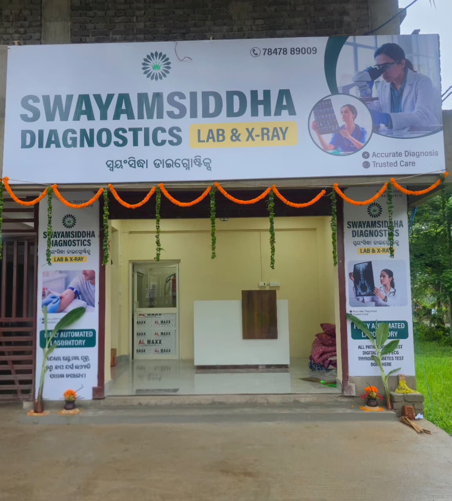
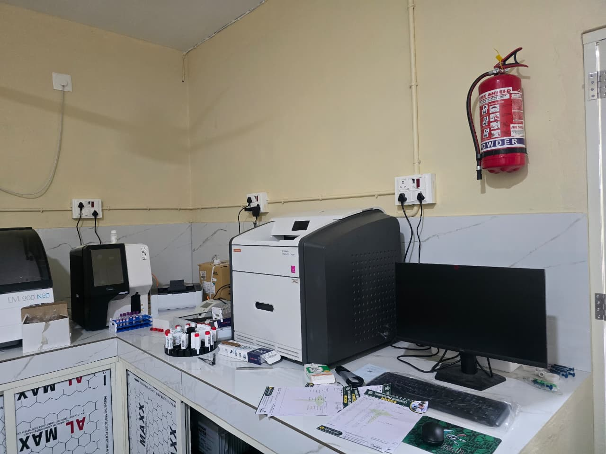
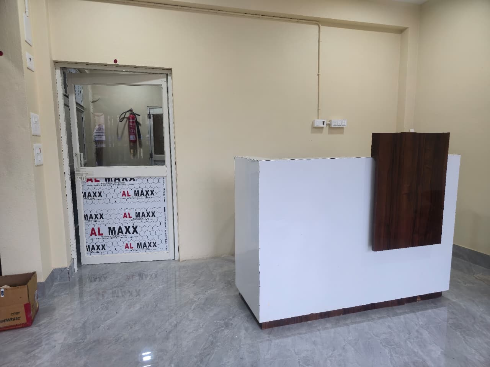
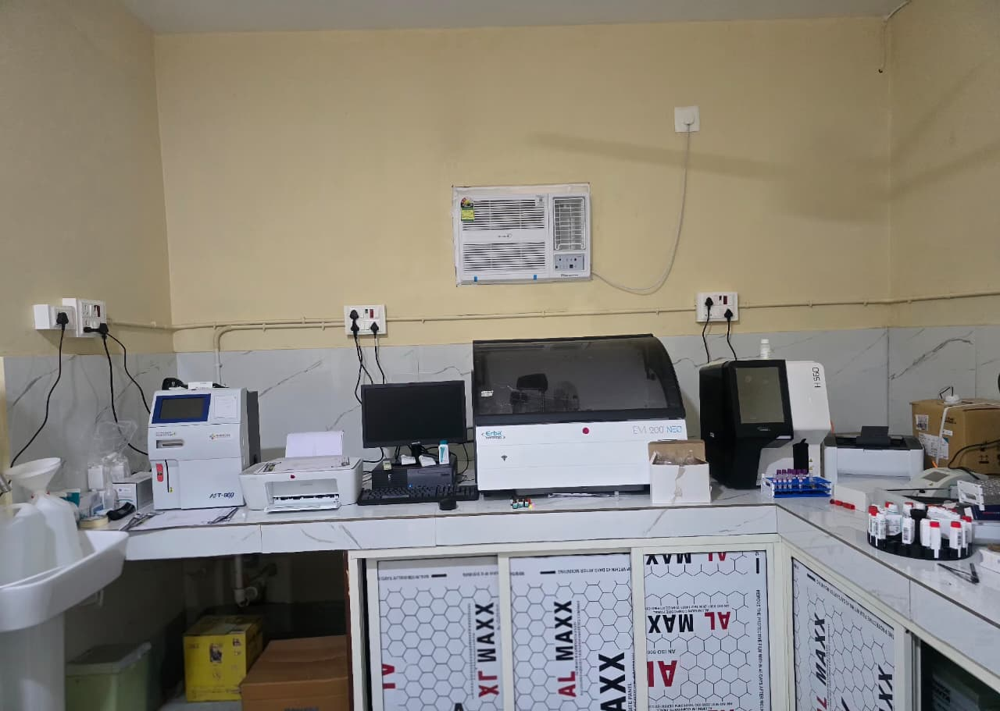
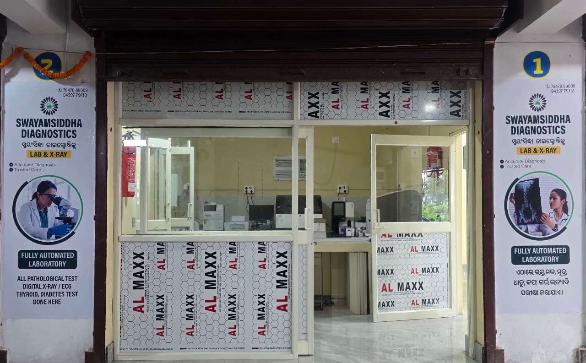
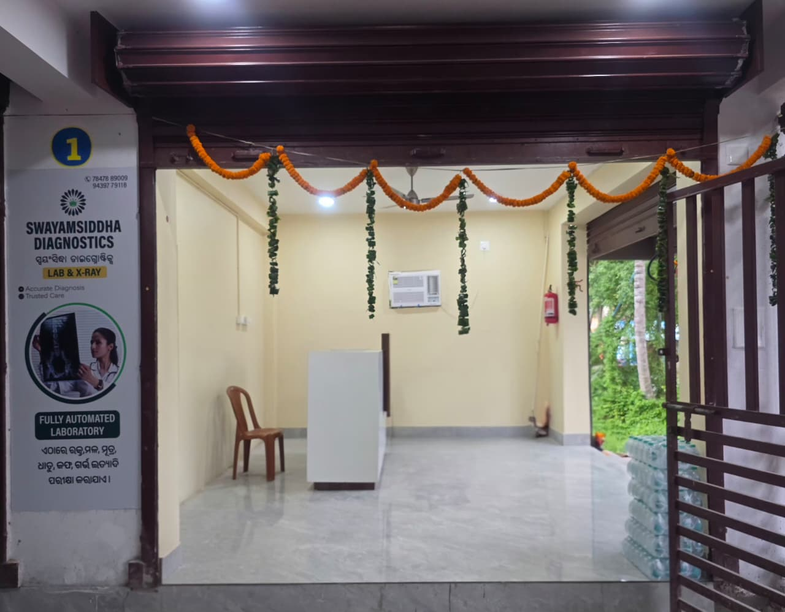

Haematology
- Complete Blood Count (CBC) with 5-part differential
- ESR · Peripheral smear
- Blood grouping & Rh typing
- Malaria — smear & rapid antigen
- Absolute eosinophil count
- Bleeding time · Clotting time
SWAYAMSIDDHA
Diagnostics · Lab & X-Ray
Fully automated laboratory · DR digital X-ray
A modern pathology lab and direct digital X-ray centre built around automated analyzers — so your report reads the same whoever is on shift. Precise results, delivered the same day, at prices that make sense.
ସ୍ୱୟଂସିଦ୍ଧା ଡାଇଗ୍ନୋଷ୍ଟିକ୍

01 About the centre
Swayamsiddha Diagnostics was set up on a simple idea: a small town deserves the same instrument quality a city hospital runs on. Every routine parameter here is measured on a closed, automated analyzer — the sample goes in, the machine pipettes, incubates, reads and prints. Fewer hands on the sample means fewer chances to get it wrong.
02 What we test
ଏଠାରେ ରକ୍ତ, ମଳ, ମୂତ୍ର, ଧାତୁ, କଫ, ଗର୍ଭ ଇତ୍ୟାଦି ପରୀକ୍ଷା କରାଯାଏ।
Looking for something not listed? Most routine pathology is available here — call us and we will tell you straight away.
03 How it works
Four steps, no surprises. This is exactly what happens to your sample between walking in and reading the result.
No appointment needed for routine tests. Bring your prescription if you have one, and ask the rate at the counter before anything is drawn.
A fresh needle and a sealed vacutainer, opened in front of you. X-ray and ECG are done in the same visit — no second trip.
Your sample goes straight onto a closed automated system. Daily controls run alongside it, so the numbers are checked before they reach you.
Most routine reports are ready the same day. Collect at the counter, or ask us to send it to you on WhatsApp.
04 The equipment
Automation is not a slogan for us — it is why two samples from the same patient give the same number. Here is exactly what is on our bench.

Clinical chemistry
Fully automated, random-access, discrete clinical chemistry analyzer. It handles the liver, kidney, lipid and sugar panels end to end.

Haematology
Fully automated 5-part differential haematology analyzer — the machine behind every CBC we report.

Immunoassay
Our AFT-900 quantitative fluorescence immunoassay system reads hormone and marker levels directly, instead of a technician eyeballing a colour change.

Radiology
Direct radiography with a flat-panel detector. No cassette, no plate to carry to a scanner — the exposure lands straight on the detector and the image is on screen in seconds.
Both are “digital X-ray”, and plenty of centres let you assume they are the same thing. They are not.
CR — computed radiography
DR — what we run
Lower dose and fewer retakes matter most for the people we X-ray most often — children, pregnant patients and the elderly.
05 Home sample collection
We collect samples at home for people who genuinely cannot travel — elderly patients, bedridden patients, and anyone medically unable to make the trip. It is a small team, so we keep this service close to the centre rather than promise a district-wide radius we cannot honour.
Elderly, bedridden and medically incapable patients. Attendants are welcome to call on their behalf.
Areas near the centre only. Call first — we will confirm honestly whether your locality is within reach.
Call or message on WhatsApp with the patient's name, area and the tests advised. We will fix a slot.

06 Inside the centre
07 Visit us
Mon – Sat 7:00 AM – 8:00 PM
Sunday 7:00 AM – 1:00 PM